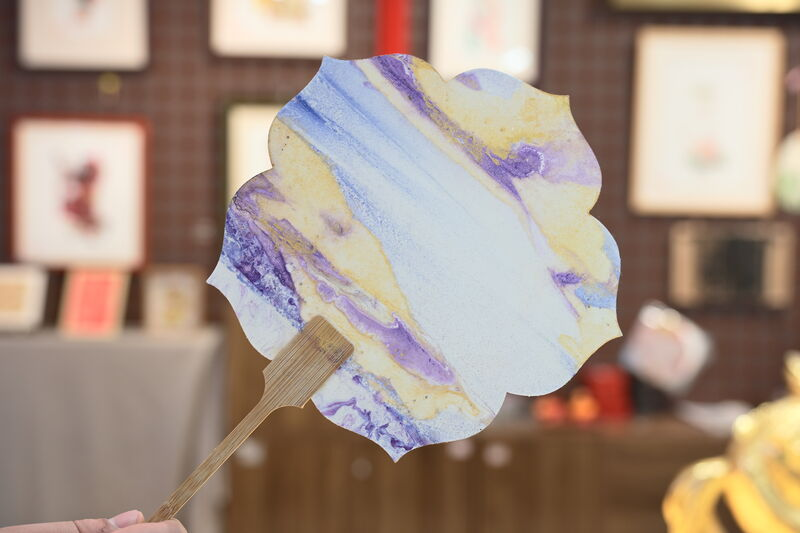
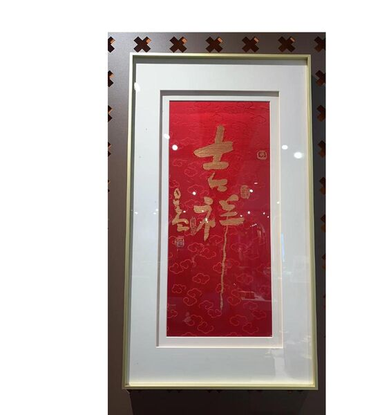
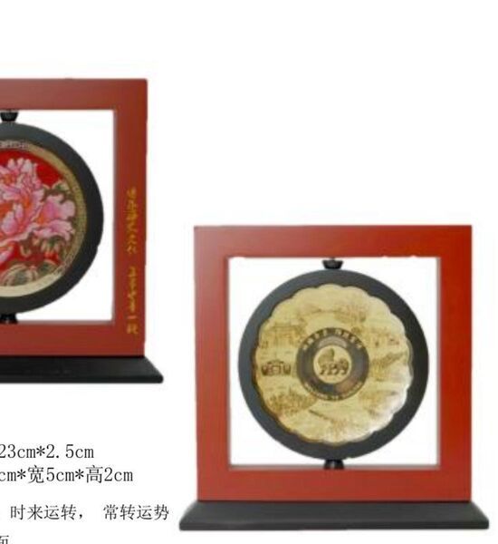
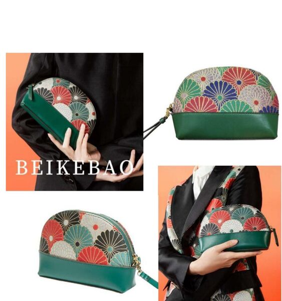
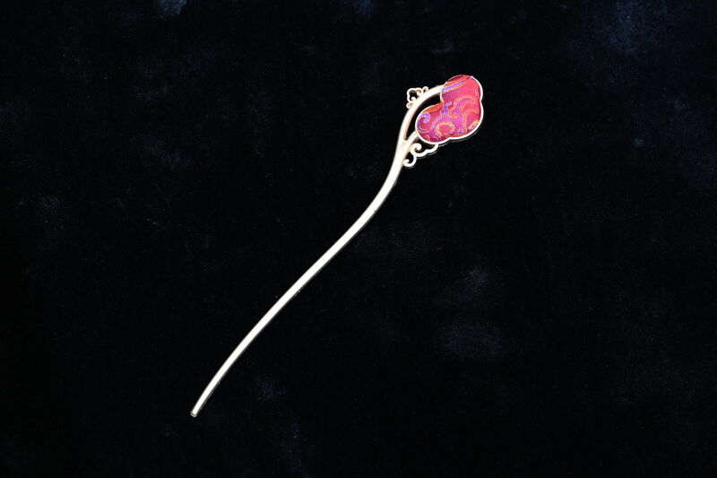
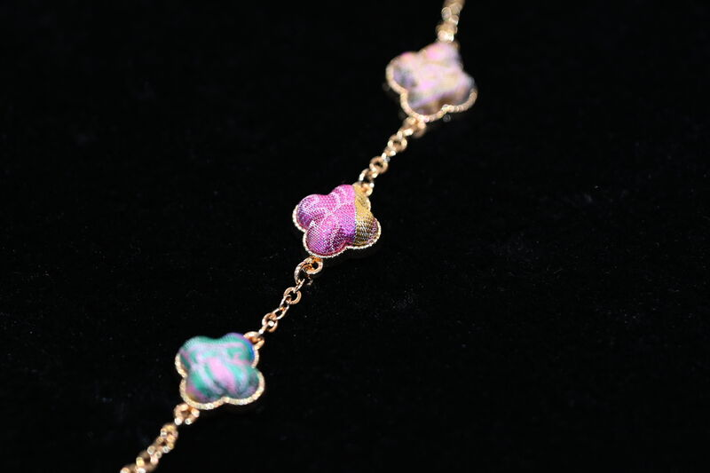
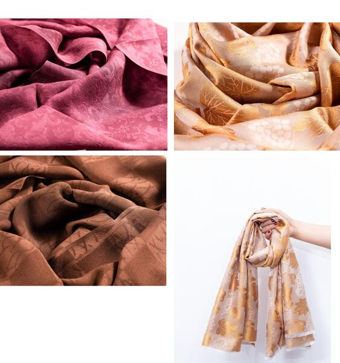
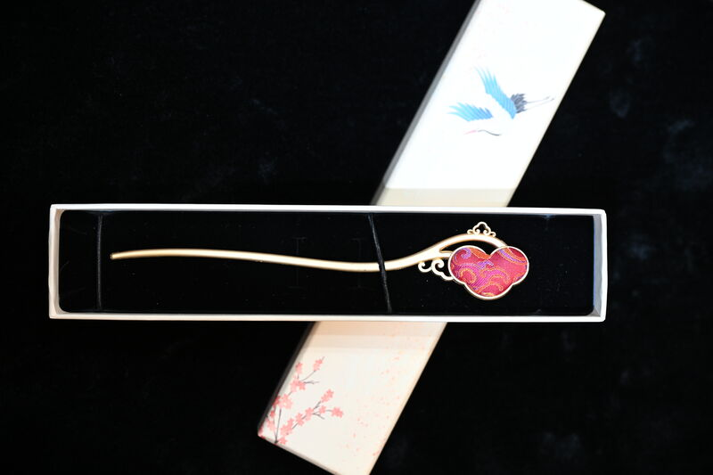
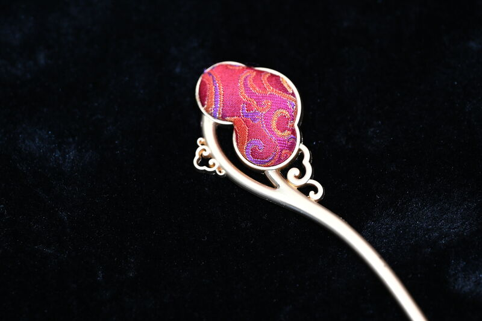

Yúnjǐn is, before it is anything else, a language of figured patterns. Below, the patterns we work with most often — and the objects we have made from them. All pieces are produced on commission; quoted on application; signed and numbered.
The pattern that gave yúnjǐn its name. An iridescent cloud-figured ground in colours that shift with the angle of the light — produced by interleaving silk with gold thread, mineral pigments, and (in the imperial originals) the barbs of peacock feathers. Available in every standard ground colour.



Emblem of the throne. Under the Qing, the five-clawed dragon was reserved for the emperor; the four-clawed for princes of the first and second rank. The most strictly regulated motif in the imperial textile vocabulary, and the one most strongly associated with state ceremony today.
The scholar's motif. From Wang Anshi's Discourse on Words: "the pine is duke among trees." A pattern of longevity, dignity, and rank — historically a favoured ground for scholar-officials and now particularly suited to commemorative commissions: anniversaries, retirements, honours.
Folded sprays of chrysanthemum, peony, or hibiscus — the late-Qing decorative idiom. Carries auspicious meanings of fù guì róng huá (lasting honour and prosperity); historically associated with consort textiles and bridal gifts. Particularly suited to anniversary and presentation commissions.




A signature commission of the house. Five brocade pouches, one for each of the classical Chinese elements — water, fire, earth, metal, wood — each in its proper ground colour and pattern. Stone-blue cloud for water; fire-red gold-cloud for fire; camel cùn-mǎng for earth; silver-white plum-on-ice for metal; pine-green folded-branch for wood. Suited to executive gifting, board sets, and protocol presentations.
A pattern from the Research Institute's recent commissions for state institutions: golden wheat ears scattered over a deep indigo ground. The grain motif carries meanings of harvest, abundance, and sustaining work — frequently chosen for institutional gifts to industry, agriculture, and academic occasions.
For commissioning teams approaching us from the brief rather than from the pattern — what physical form should this object take?


Every project begins with a short brief: occasion, audience, scale, palette, calendar. The house responds within five working days with a proposal — the proposed muster, the proposed form, an indicative quote, and a production timeline. No piece is begun before the brief is signed.
The Bespoke Process